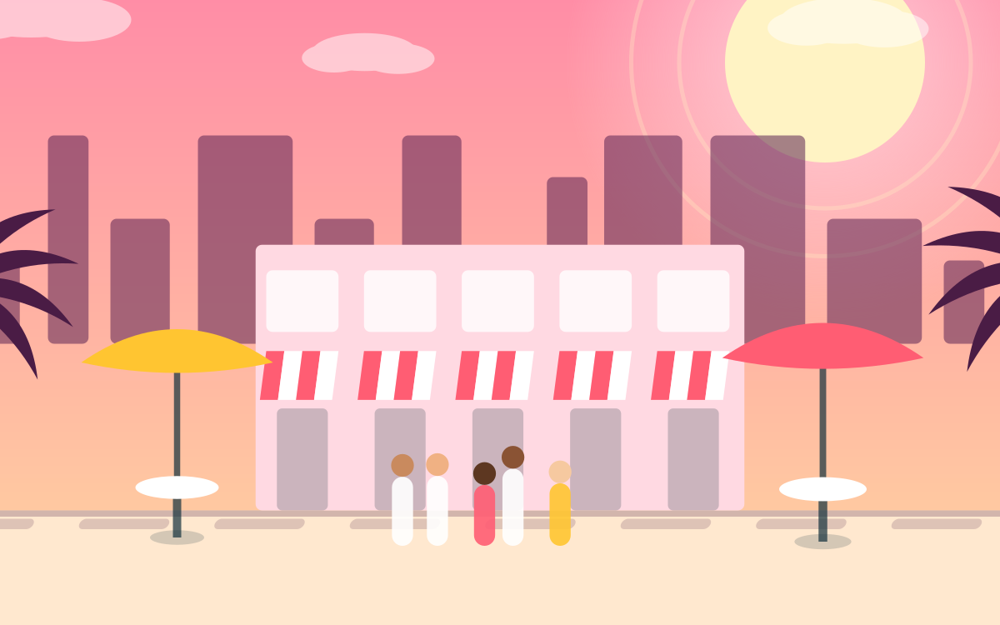
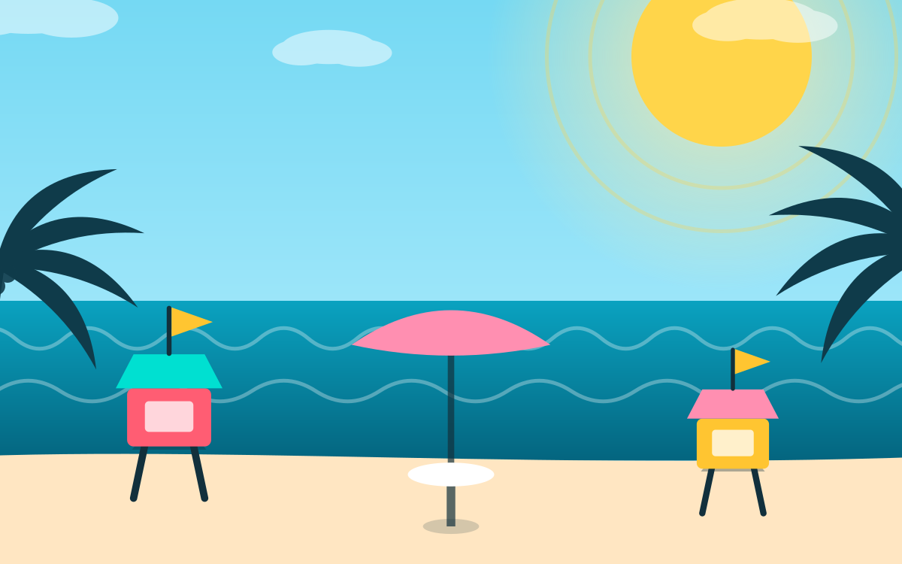
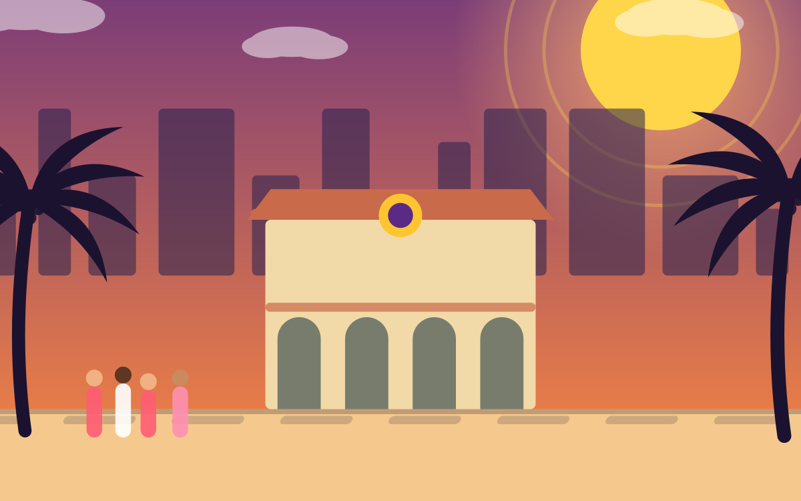
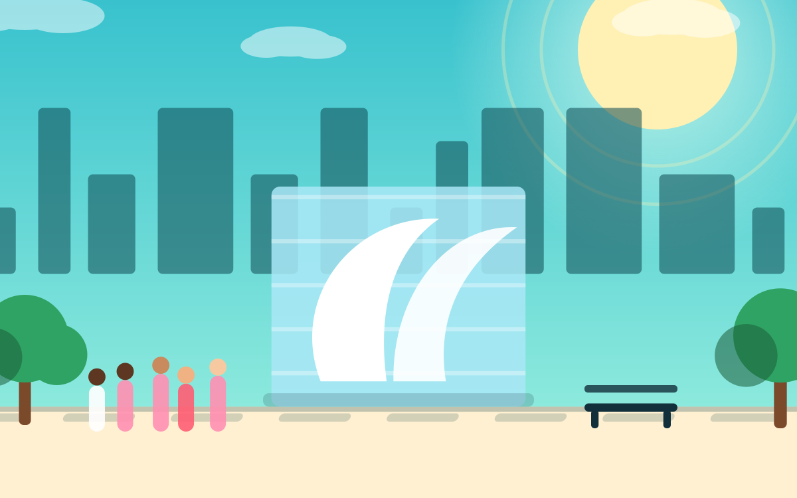
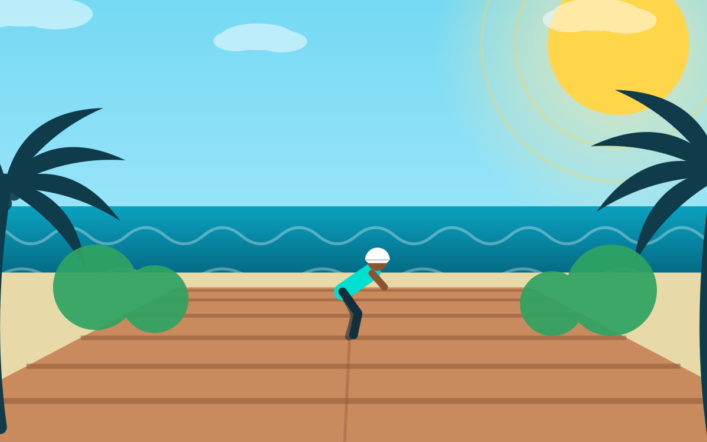
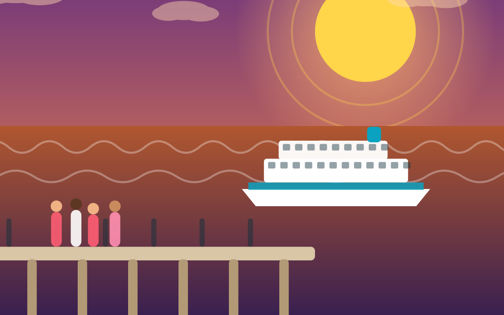
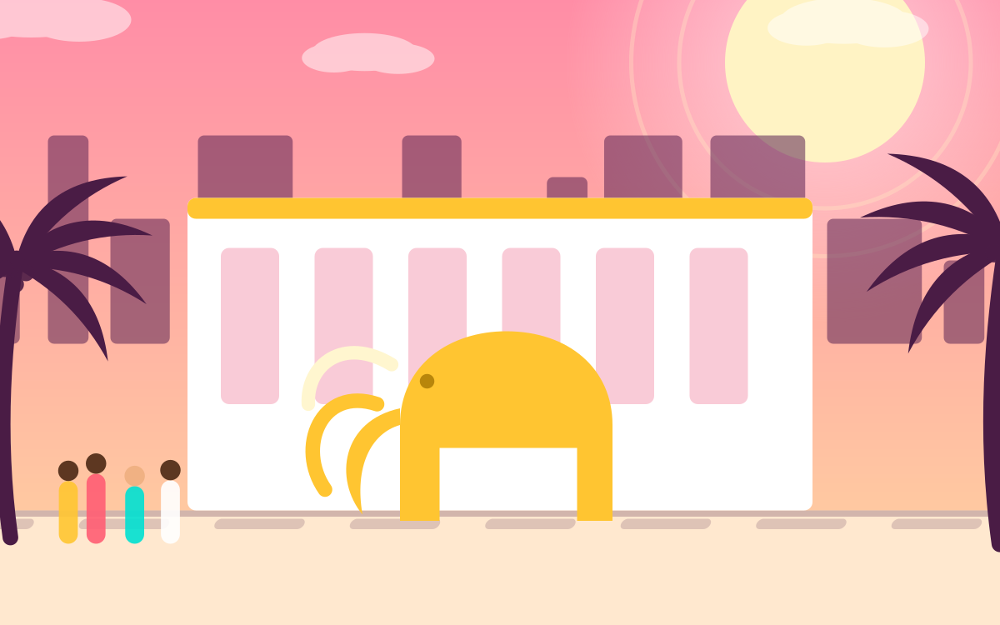
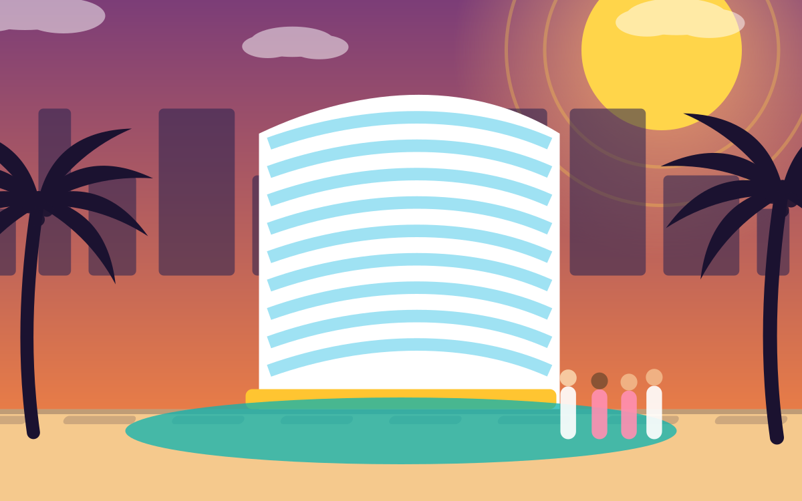

O mais reservado
Beach Cruiser
O clássico de South Beach. Pneus largos, banco confortável, uma marcha só e zero estresse pelo calçadão da Ocean Drive.
$12per hora
Book

Bikes, e-bikes, Trikkes, Segways e patins a um quarteirão da Ocean Drive — e ainda passeios de Segway pelo distrito Art Déco e Star Island, airboats nos Everglades, bate-voltas a Key West, jet skis e parasailing. Para a família toda, a pleno sol e sem moderação.passeios guiados, airboats nos Everglades e bate-voltas a Key West.
Na Miami Beach Bikes · Rentals & Tours, 233 da rua 14, Miami Beach, FL 33139 — a um quarteirão da Ocean Drive e do Beachwalk. Abrimos todos os dias das 9h às 20h, alugamos por hora, dia, semana ou mês a partir de US$ 12/hora, temos happy hour das 13h às 16h que dá uma hora grátis, e entregamos sem custo em hotéis de South Beach em aluguéis de 24 horas ou mais. Ligue para (305) 830-9440.
Diga como você está se locomovendo, quanto tempo tem e do que gosta. Ele monta uma rota a partir da nossa porta na Washington com a rua 14 pela South Beach que vale a pena — Española Way, a Mansão Versace, as torres de salva-vidas de Lummus, South Pointe — e depois te guia parada por parada enquanto você pedala, usando a localização do celular.

Todo aluguel vem com capacete, cadeado, água gelada e um mapa de rotas impresso. Alugue de uma hora até sessenta dias.
O clássico de South Beach. Pneus largos, banco confortável, uma marcha só e zero estresse pelo calçadão da Ocean Drive.

Pneus de dez centímetros feitos para a areia dura da beira d'água. A única bike daqui com a qual dá para andar na praia.

Assistência ao pedal até 32 km/h. Wynwood, Bayside, Downtown e volta sem suar no sol de Miami.

Um tandem com assistência para dois. O mais forte dita o ritmo e ninguém fica para trás no meio da ponte.

O veículo de três rodas que dá nome a esta loja. Você o conduz inclinando o corpo, é mais fácil que uma bike e nada chama mais atenção na Ocean Drive.

Autoequilibrado, divertidíssimo e mais fácil do que parece. Treinamento grátis antes de cada saída — e também vendemos e consertamos.

Quatro rodas, dois bancos lado a lado — mais os tandems clássicos. Conversem o caminho todo em vez de gritar por cima do ombro.

Três rodas, cesta traseira grande e nenhum equilíbrio necessário. A escolha para piqueniques na praia e passeios tranquilos.

Patine o Beachwalk como um local. Tamanhos para a família toda, proteções e capacete inclusos em cada par.
Longboards para o Beachwalk e a Lincoln Road. Proteções e capacete com cada prancha, e uma aula de cinco minutos se for sua primeira vez.

Bikes infantis de 12 a 24 polegadas, cadeirinhas, carretinhas e rodinhas. Todo mundo pedala, ninguém fica no hotel.
Nossos guias cresceram nesta areia. Uma hora na Ocean Drive por US$ 49, ou 2,5 horas pela Millionaire’s Row por US$ 89: você leva o neon, as mansões e as histórias por trás delas, num ritmo que serve tanto para os avós quanto para os de catorze anos.


O curto, e por onde quase todo mundo começa. Ocean Drive, Lummus Park e a orla de Segway, com treinamento incluído.
Stops: Ocean Drive · Lummus Park · 10th St Auditorium · Beachwalk

Pela MacArthur Causeway e sua ciclovia protegida até os portões de Star Island — o terminal de cruzeiros de um lado, as mansões do outro.
Stops: MacArthur Causeway · Star Island · Palm & Hibiscus Islands · Terminal Island

A versão longa: Ocean Drive, Española Way, Lincoln Road, South Pointe Park e o píer, com paradas longas o suficiente para fotos de verdade.
Stops: Ocean Drive · Española Way · Lincoln Road · South Pointe Park
Reserve todo o sul da Flórida no mesmo balcão onde você pega a bike. A maioria dos bate-voltas inclui busca no hotel.

Até o Rio de Capim para um passeio de airboat entre os juncos, um show de fauna e jacarés de pertinho. Transporte de South Beach incluído.
Stops: Busca no hotel · Airboat ride · Wildlife show · Alligator encounter

A Overseas Highway inteira, com a Seven Mile Bridge incluída, e cerca de seis horas livres na ilha para a Duval Street, a Mallory Square e o Southernmost Point.
Stops: Seven Mile Bridge · Duval Street · Mallory Square · Southernmost Point

Meio dia pela cidade inteira: Little Havana, Wynwood, o Design District, Brickell, Coconut Grove e volta pela baía.
Stops: Little Havana · Wynwood Walls · Design District · Coconut Grove
Escolha pela internet, ligue ou simplesmente entre: estamos a um quarteirão da Ocean Drive e guardamos bikes livres para quem chega sem reserva, o dia todo.
Altura do selim, capacete, cadeado e dois minutos de orientações de segurança. Quem vai de Segway recebe um treinamento completo ali mesmo.
Marcamos a melhor rota para o seu tempo, as suas pernas e o vento do dia, e continuamos disponíveis por telefone enquanto você pedala.
Devolva na loja ou deixe no hotel: em aluguéis de 24 horas em South Beach nós buscamos, de graça.
South Beach é plano, compacto e cheio de ciclovias protegidas, além do Beachwalk sem carros que acompanha toda a areia. Estas são as rotas que damos aos nossos amigos.

Reto pelo Beachwalk asfaltado até o South Pointe Park e volta. Plano, sem carros, com trechos de sombra, e o melhor primeiro passeio de South Beach.

Ocean Drive, Collins, Washington e Española Way. Faça depois das 19h, quando o neon acende e o distrito inteiro fica rosa e turquesa.

Ciclovia protegida pela MacArthur Causeway até Palm, Hibiscus e Star Island. Navios de cruzeiro de um lado, mansões do outro.
Vinte e três pontos emblemáticos ficam a menos de uma hora da nossa porta: o neon art déco, a escadaria da Versace, a sala de concertos de Gehry, o píer por onde passam os cruzeiros. Pegue as rodas, pegue a rota e vá sem pressa.

Española WayA vila espanhola
Lummus ParkAs torres de salva-vidas coloridas
Versace MansionVilla Casa Casuarina
New World CenterA sala de concertos de Gehry
Miami Beach BoardwalkO corredor das uvas-da-praia
South Pointe PierNavios de cruzeiro a um braço de distância
Faena DistrictO mamute dourado
Fontainebleau1954, e ainda se exibindoFamílias, casais, gente de cruzeiro passando o dia e vizinhos que só precisam de uma revisão.
O passeio de Segway pelo Art Déco foi o melhor da viagem. Vinte minutos de treino e minha sogra já descia a Ocean Drive como profissional.
Alugamos quatro bikes e uma cadeirinha por uma semana. Entregaram no nosso hotel na rua 16, trocaram um pneu furado na mesma tarde, sem drama nenhum.
Levamos as e-bikes até Wynwood e voltamos. Os melhores 89 dólares que gastamos em Miami — vimos mais cidade em um dia do que nos três anteriores.
Patinei o Beachwalk no pôr do sol com meus filhos. Proteções, capacetes e boas dicas de para onde ir. Equipe super gente boa.
Fazer parasailing sobre South Beach foi irreal. Reserva fácil na própria loja e a tripulação do barco fez minha filha de dez anos se sentir completamente segura.
Consertaram os freios da minha própria bike em menos de uma hora enquanto eu tomava um café. Mecânicos de verdade, preço justo, lugar de local.
Na nossa loja na 233 da rua 14, Miami Beach, FL 33139 — a um quarteirão da Ocean Drive e do Beachwalk. Abrimos todos os dias das 9h às 20h. Não precisa reservar e também entregamos em todo South Beach.
Os beach cruisers começam em US$ 12 por hora e US$ 28 pelo dia inteiro (das 9h às 20h). As fat tire a partir de US$ 18/hora, as elétricas a partir de US$ 25/hora, os triciclos adultos a partir de US$ 18/hora, os tandems a partir de US$ 22/hora e os patins a partir de US$ 12/hora. Capacete, cadeado e água inclusos em todos os aluguéis.
Se você alugar entre 13h e 16h, ganha uma hora extra em qualquer bike, triciclo ou patins. Vale tanto sem agendamento quanto com reserva, todos os dias da semana.
O passeio da Ocean Drive custa US$ 49 por pessoa e dura uma hora. O de Star Island US$ 69, os de South Beach e Art Déco US$ 79 cada por duas horas, e o da Millionaire's Row US$ 89 por 2,5 horas. Todos incluem treinamento e exigem no mínimo duas pessoas.
Aventuras de airboat nos Everglades (4,5 horas, US$ 69), bate-voltas a Key West, city tours de Miami, passes do Big Bus turístico, aluguel de jet ski, parasailing em South Beach, passeios de barco pela baía de Biscayne e pelo banco de areia, e voos de helicóptero sobre a cidade. Tudo pode ser reservado na loja, online ou por telefone no +1-305-830-9440, e a maioria inclui busca no hotel.
A Rota Viva é nosso guia turístico virtual gratuito para South Beach. Você diz como está se movendo — a pé, de cruiser, de bike elétrica, de Segway, de Trikke ou de patins —, quanto tempo tem e o que te interessa, e ela monta uma rota a partir da nossa porta na 233 da rua 14 passando pelos pontos que se encaixam, e depois te guia parada por parada enquanto você pedala. Fica no site, então não há app para instalar.
Sim. Abra o assistente em qualquer página, toque em Estender meu aluguel, digite o número do ticket do seu recibo e escolha quanto tempo a mais quer — uma hora, duas, quatro, um dia ou uma semana. Você paga pelo celular com Apple Pay, Google Pay, cartão ou PayPal e seu horário de devolução se ajusta sozinho. Não precisa voltar pedalando.
Apareça qualquer dia entre 9h e 20h, ou reserve antes e a deixamos ajustada e pronta quando você chegar.